SEPTEMBER 4–6 · FAMILY GETAWAY FINDER
Let the family shortlist the weekend
Compare 25 realistic escapes—including five rail-first weekends and three one-hotel loops—then save up to four finalists.

LESS SCROLLING. MORE STORIES.
Real adventures for real families—road trips, trails, lakes, campfires, gear and the kind of days your kids actually remember.
PICK NEXT WEEKEND
Compare 25 realistic escapes—including five rail-first weekends and three one-hotel loops—then save up to four finalists.
MR ADVENTURE DAD
This is a field guide for parents who want to get the family out of the house and into something worth remembering—without turning every trip into a military operation.

Upstate New York, Adirondacks, Finger Lakes and road-trip worthy escapes.

Hiking, camping, paddling and four-season family adventure.

Useful gear picks, setup guides and things actually worth bringing.
START HERE
FIELD NOTES
A practical two-day plan with scenery, food, easy wins and enough flexibility for kids.
Water, views, food, backup plans and how to avoid spending half the day deciding what to do.

A simple playbook for timing, snacks, backups, weather and getting home before it all falls apart.
THE POINT OF ALL THIS
So go now. Take the scenic road. Get the ice cream. Stay for sunset. Let them get muddy. You can clean the car later.
FRESH FIELD PLANS

A high-payoff Lake Ontario hike with the safety and turnaround plan included.

Soft, hard, backpack—or skip it. Make the decision before marketing does.
TODAY'S FIELD PLANS

Walk first, eat on time, then choose one second act with current park logistics and backups.

Three route-based loadouts, a real fit check and an honest reason to keep the pack you own.
TODAY'S FIELD PLANS

Gorge first, overlook second, with the current beach closure treated like the real constraint it is.

Match rain protection to movement, exposure and the actual exit plan.
TODAY'S FIELD PLANS

One short trail, one wildlife stop, one lunch, and no need to conquer all nine miles.

Legal service, honest range, battery choices and the no-buy option.
TODAY'S FIELD PLANS

Gorge first, a hard stair checkpoint, an optional shuttle and no obligation to make the day heroic.

TODAY'S FIELD PLANS

Two waterfall views, one overlook, lunch, then the nature center or a clean exit.

Headlamp for movement, flashlight for backup, lantern for a stationary zone—and a no-buy test.
TODAY'S FIELD PLANS

A bounded fort tour, lake views, lunch on time and no attempt to turn history into homework.

Choose by the failure you need to prevent, then check ports, watt-hours, heat and recalls.

Five zones, a lights-out agreement and a morning sweep that keeps a two-night room under control.
TODAY'S FIELD PLANS

The real route: 90 minutes, 139 stairs, 52 degrees and no bags underground.

Choose the pair a child can find, focus and hold steady—not the largest number.

A calm arrival drill, a child script and an adult response that prevents aimless searching.
TODAY'S FIELD PLANS

A flexible Wildlife Drive day with the real seasonal closures and family logistics.

Cards, magnets, screens and the no-buy kit—matched to the way you travel.

Prevent, spot the early warning, pull over safely and recover without panic.
TODAY'S FIELD PLANS

Take the upper view first, then decide whether the gorge trail earns the effort.

Rolling carry-on, duffel or backpack—matched to the way the family actually moves.

Pick three anchors, eat early and leave before the crash.
TODAY'S FIELD PLANS

Pick three animals, use the indoor reset and leave before the crash.

Fit, comfort and consistent wear matter more than the biggest box number.

Make the weather decision before sunk cost and momentum take over.
TODAY'S FIELD PLANS
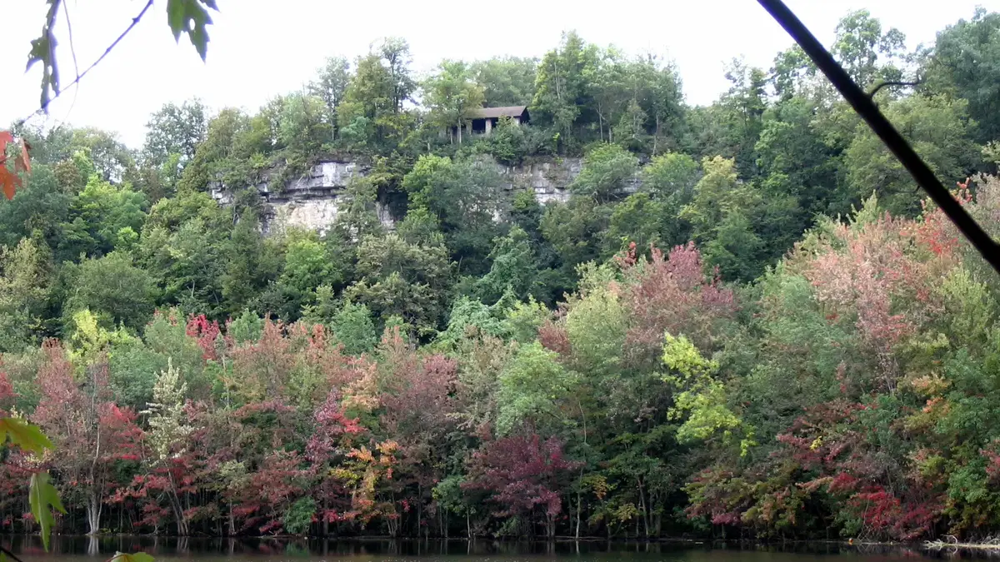
See the basin, respect the drop and make the rougher route optional.
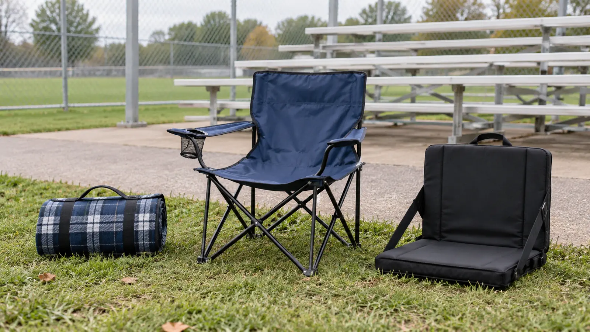
Choose by the carry, surface and gate rule—not the cup holder.
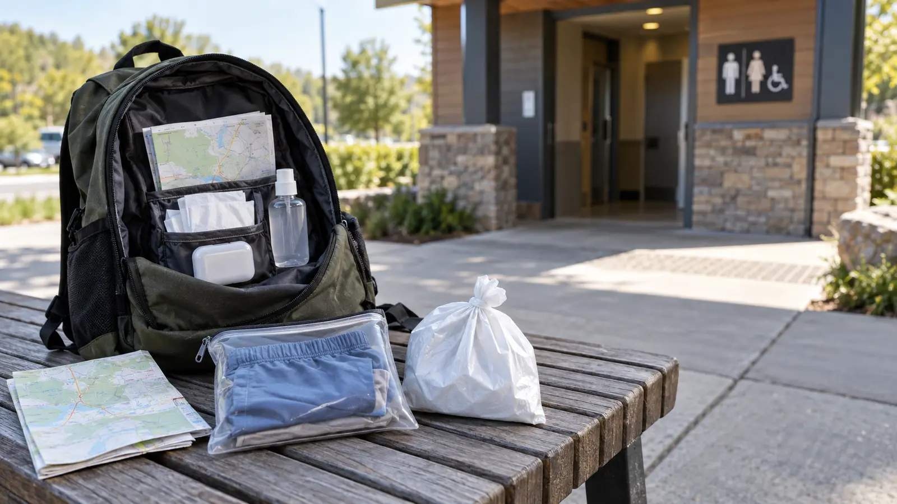
Use four predictable stops and keep one accident from taking the day.
TODAY'S FIELD PLANS
Pick three zones, schedule the dome and leave before the crash.
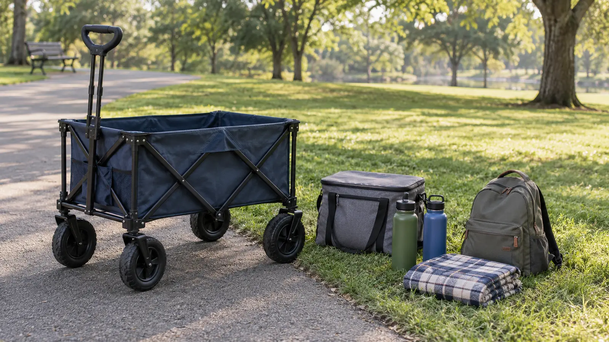
Separate child-passenger approval from a cargo cart with cup holders.
Give every child a place before bags, carts and excitement take over.
TODAY'S FIELD PLANS

Let one short route prove the day before adding distance.
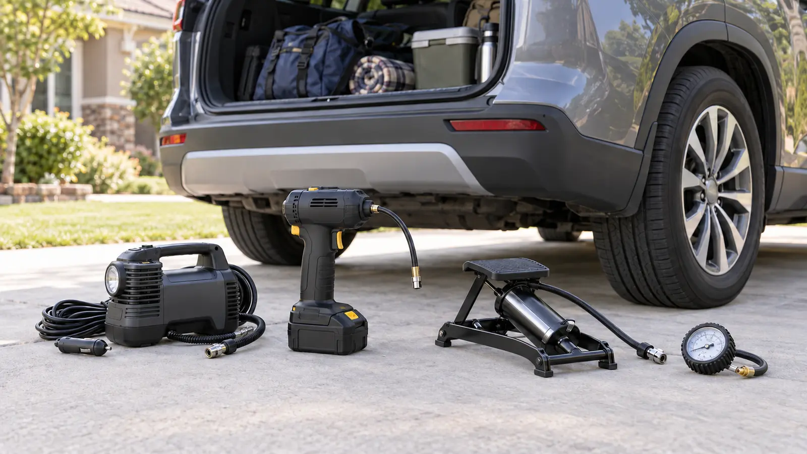
Match power, reach and duty cycle to the vehicle placard.
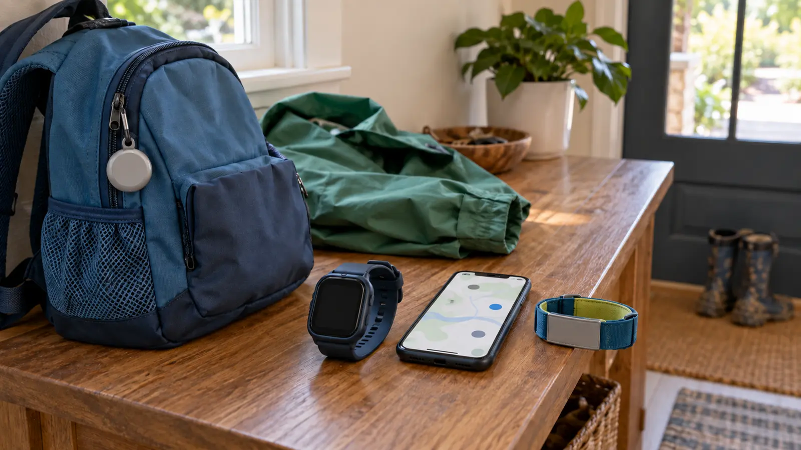
Separate item recovery, device location and the real lost-child plan.
TODAY'S FIELD PLANS
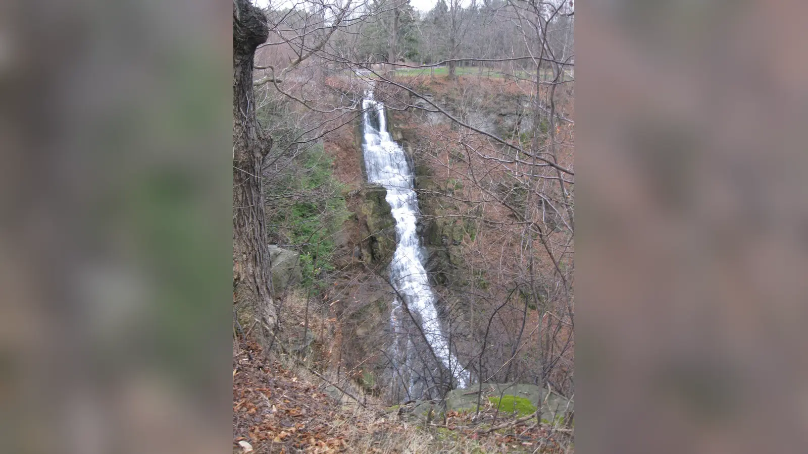
See the 137-foot waterfall first, then decide whether the family needs one trail.
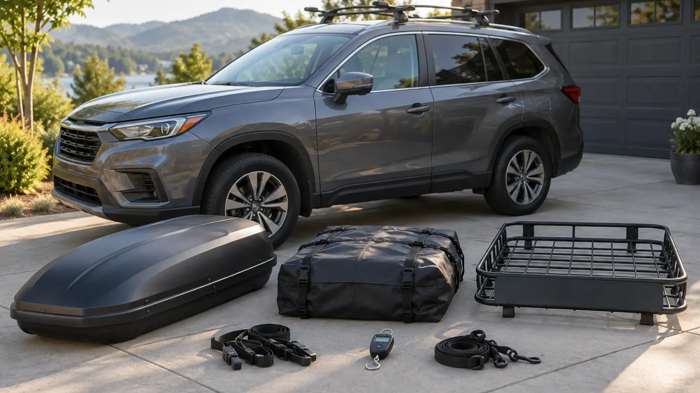
Match the box, bag or basket to the vehicle, rack, load and route.

Build the day around access, seating, food and an early exit.
TODAY'S FIELD PLANS
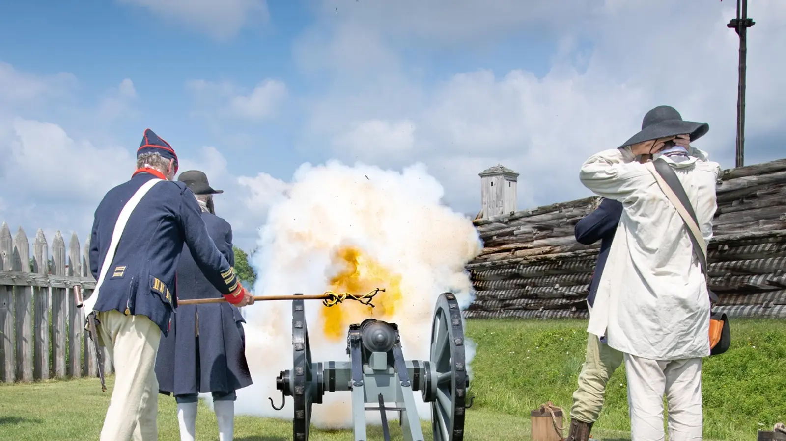
A focused two-hour visit with current hours, access and noise guidance.
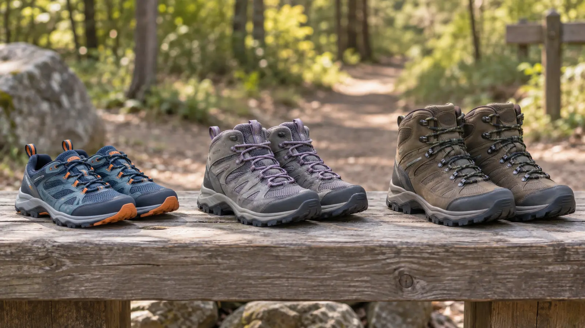
Match the shoe to the child, route, weather and drying plan.
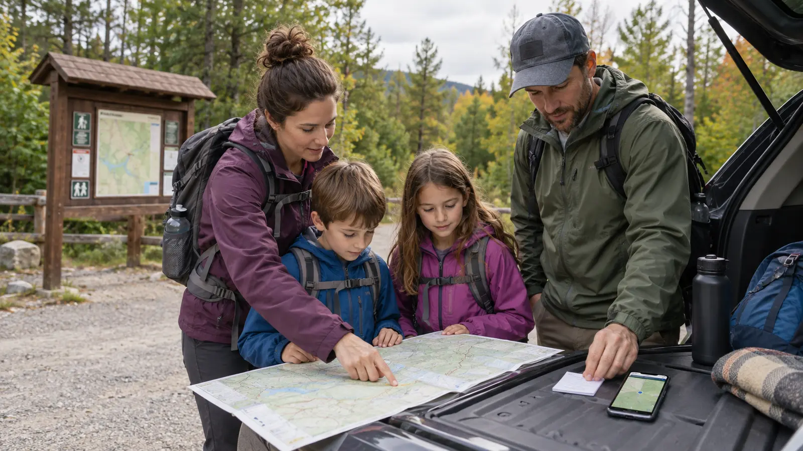
Download, write down, brief and turn around on time.
TODAY'S FIELD PLANS
Use the boat and building as the anchors, then leave cleanly.

Compare length, locks, grips and the honest no-buy option.
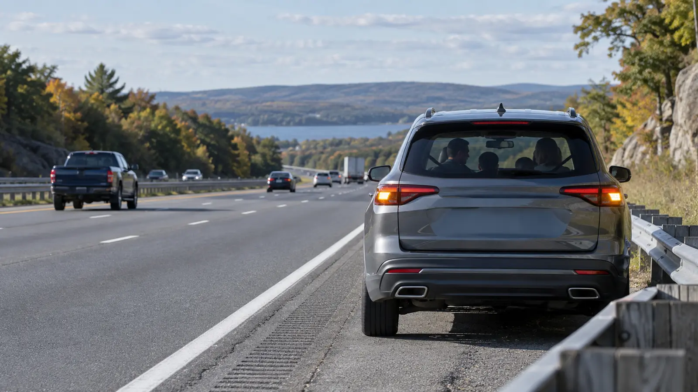
Get clear, contain the kids and call with a precise location.
TODAY'S FIELD PLANS
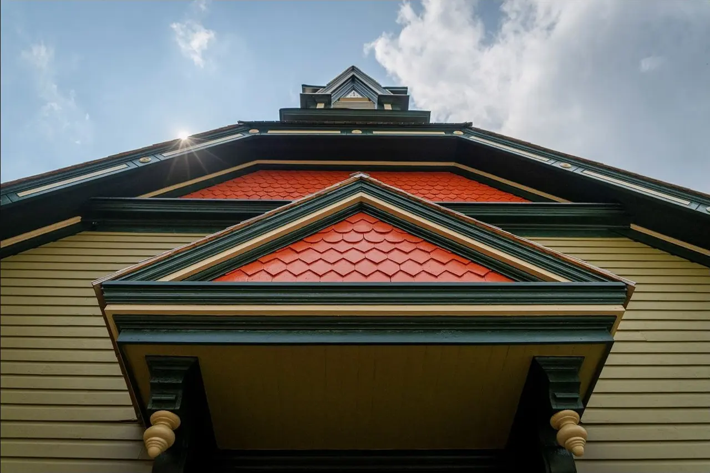
Reserve the Home tour, then add only the sites that are actually open.
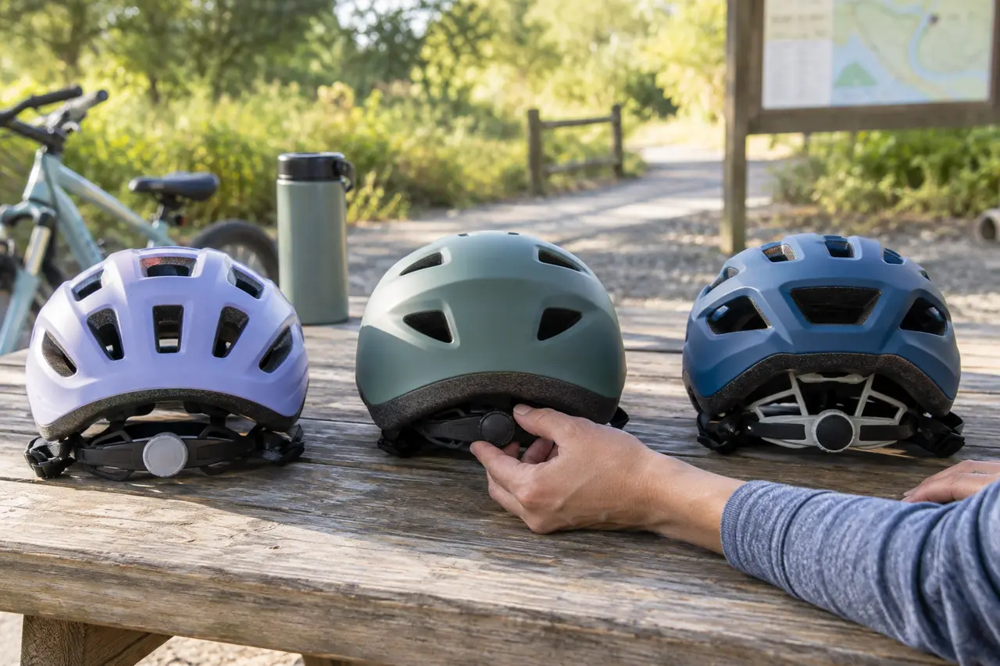
Check certification, measure, fit and know when replacement wins.

Prevent, check, remove correctly and record what matters.
TODAY'S FIELD PLANS
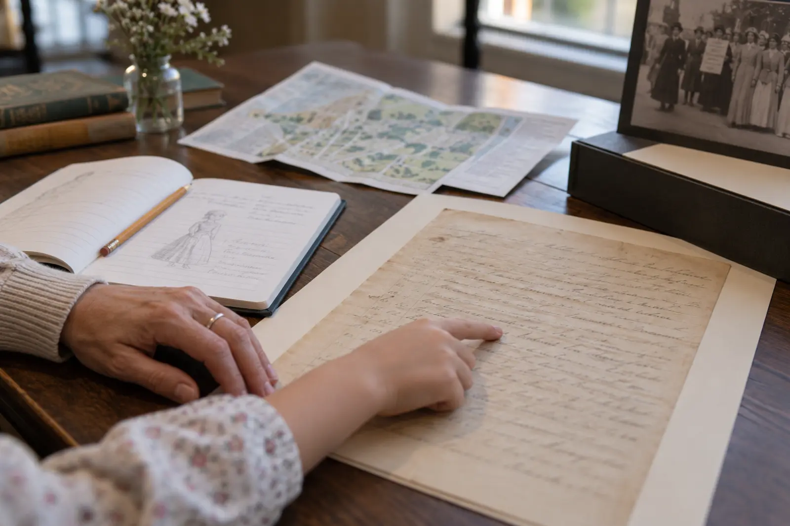
Build the free history day around the Visitor Center and Wesleyan Chapel.
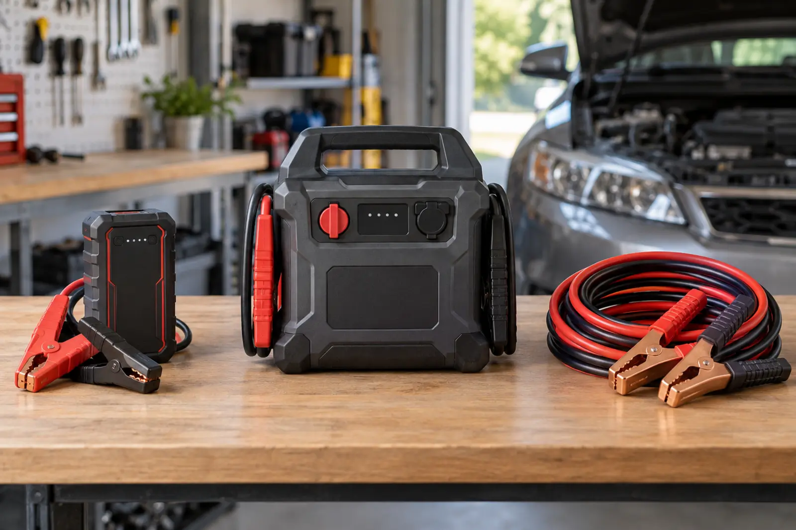
Compare a lithium pack, jump box and cables by the real dependency.
Find two exits, count the doors, set shoes and keys, assign children.
THE USEFUL STUFF
These are practical categories to compare—not a reason to overpack. Check fit, specifications and current reviews before buying.
Paid links: As an Amazon Associate I earn from qualifying purchases. You pay no additional cost.
A comfortable pack keeps water, layers, snacks and small emergencies together.
See current options → COMPARE ON AMAZONEasy-to-carry bottles make regular water breaks less of a production.
See current options → COMPARE ON AMAZONKeep one organized kit where an adult can reach it quickly.
See current options → COMPARE ON AMAZONReserve phone power for navigation, tickets, weather and emergencies.
See current options →